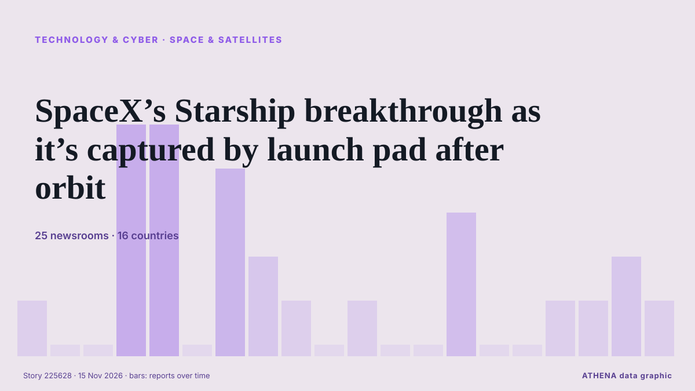

SpaceX’s Starship breakthrough as it’s captured by launch pad after orbit

SpaceX’s Starship made a triumphant return to Earth as it was caught in mid-air by giant mechanical arms in a dramatic first. from Sydney Morning Herald
Reported independently by 25 outlets in 16 countries since 14 Nov, first by The Straits Times; coverage is still spreading. ATHENA rates the risk low (1.4/10), driven mainly by the severity of the harm described and its geographic and sector reach. Confidence is 92% (high), with 25 independent outlets corroborating it and an average source reliability of 75%. Outlets by country: United Kingdom (7), United States (2), Turkey (2). Coverage: 14 Nov to 15 Nov, 19 hours.
Why it matters: Technology and cyber developments shape security, competition and the rules of digital life.
What changed: 27 new reports from 25 outlets in the 24 hours to 15 Nov.
First reported as: SpaceX’s Starship returns from orbit and is caught by giant mechanical arms
How to read this page
- What you are reading
- 25 outlets in 16 countries reported this event. The reports below are listed in the order they appeared; each headline opens the original article. ATHENA writes none of the reports.
- Our reading
- For the record — The reports describe a completed, domestic, commercial or personal matter. We list it so you can see who reported it and when. We are not tracking a risk of wider conflict here.
- How much evidence
- Fair Several independent outlets agree, but the picture could still change.
After repeats, off-topic items and stale reports are removed, 22 of the 27 listed reports are counted; 100% of the headlines match the event.
- What this does not mean
- ATHENA measures how an event is reported, not whether it is true. This is not a forecast, a judgement on who is right, or advice.
- What would change it
- Reports from other independent outlets showing a different development, or a firm confirmation or denial from an official source.
Reading R2 · refreshed with every update of this page. ATHENA has not yet published a track record for these readings; when it does, it will be linked here.
At a glance
Selected, scored and written by ATHENA's published methodology. No editor intervenes in individual events. How this is produced ›
| 14 Nov 18:04 UTC | 1 |
|---|---|
| 14 Nov 19:04 UTC | 0 |
| 14 Nov 20:04 UTC | 0 |
| 14 Nov 21:04 UTC | 5 |
| 14 Nov 22:04 UTC | 5 |
| 14 Nov 23:04 UTC | 0 |
| 15 Nov 00:04 UTC | 4 |
| 15 Nov 01:04 UTC | 2 |
| 15 Nov 02:04 UTC | 1 |
| 15 Nov 03:04 UTC | 0 |
| 15 Nov 04:04 UTC | 1 |
| 15 Nov 05:04 UTC | 0 |
| 15 Nov 06:04 UTC | 0 |
| 15 Nov 07:04 UTC | 3 |
| 15 Nov 08:04 UTC | 0 |
| 15 Nov 09:04 UTC | 0 |
| 15 Nov 10:04 UTC | 1 |
| 15 Nov 11:04 UTC | 1 |
| 15 Nov 12:04 UTC | 2 |
| 15 Nov 13:04 UTC | 1 |
| 14 Nov 22:00 UTC | 0.0 |
|---|---|
| 14 Nov 22:30 UTC | 1.1 |
| 15 Nov 13:06 UTC | 1.4 |
Why these numbers
Importance
Risk
Confidence
The reporting — who reported it, and when
headline as published · opens the original- The Straits Times · SingaporeSpaceX’s Starship returns to landing pad from orbit, acing test for reusable rockets
- Universe Today · CanadaBaby, She's Back! SpaceX Catches a Starship From Orbit for First Time
- NPR · United StatesSpaceX successfully catches Starship and makes history
- The Verge · United StatesWatch SpaceX successfully execute the first ‘chopstick’ catch of Starship
- Arab News · Saudi ArabiaSpaceX’s Starship captured by launch pad arms
- Belfast Telegraph · United KingdomSpaceX’s Starship returns from orbit and is caught by giant mechanical arms
- Anadolu Agency (English) · TurkeySpaceX makes history as robotic arms catch Starship after orbital flight
- BBC News · United Kingdom'Can you believe it?': SpaceX catches part of its Starship rocket on return to Earth
- TRT World · TurkeySpaceX catches Starship after 22-hour orbital flight in major reusability milestone
- The Guardian · United KingdomSpaceX’s Starship returns to launch pad from orbit in victory for company
- The Irish News (Belfast) · United KingdomSpaceX’s Starship returns from orbit and is caught by giant mechanical arms
- Sydney Morning Herald · AustraliaSpaceX rocket 'caught' at launchpad
- Al Jazeera English · QatarSpaceX’s Starship captured by launchpad arms in dramatic first
- The Jerusalem Post · IsraelSpaceX achieves first Starship spacecraft tower catch following milestone 14-orbit Starlink mission
- Times of India · IndiaWatch: SpaceX's Starship completes first-ever midair catch on return from orbit
- Al Jazeera English · QatarSpaceX’s Starship nails a smooth return with historic catch
- New Straits Times · MalaysiaSpaceX catches Starship for first time after return from orbit
- Gulf News · United Arab EmiratesSpaceX’s Starship returns from orbit and is captured by launch pad arms in a dramatic first
- Israel Hayom (English) · IsraelSpaceX completes first Starship catch after 22-hour mission
- Greek Reporter · GreeceSpaceX Makes History With First Starship Catch After 22-Hour Orbital Flight
- Sydney Morning Herald · AustraliaSpaceX’s Starship breakthrough as it’s captured by launch pad after orbit
- Arab Times · KuwaitSpaceX’s Starship returns from orbit and captured by launch pad arms in dramatic first
- Euronews English · FranceWatch: SpaceX catches Starship in midair on return to launch tower
- The Independent · United KingdomSpaceX’s Starship returns to launch pad from orbit for first time
- Guardian Business · United KingdomSpaceX’s Starship returns to launch pad from orbit – video
- AzerNews · AzerbaijanSpaceX Starship makes first-ever landing in Mechazilla launch tower arms
- Phys.org · United KingdomSpaceX's Starship returns from orbit and is captured by launch pad arms in a dramatic first